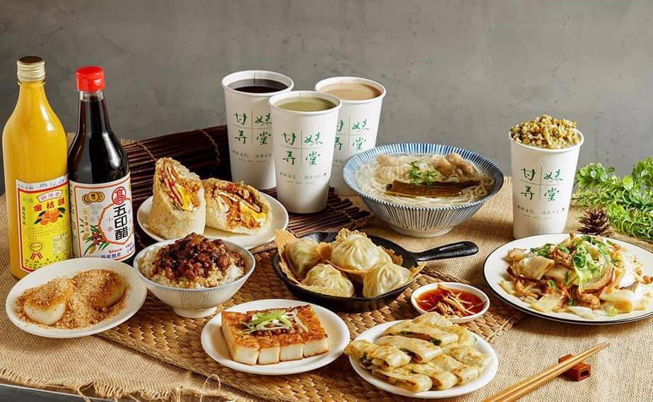

<haml><head>


<title>甘妹弄堂</title>
</head>


<body background="image/04.jpg">


<h1><font face="微軟正黑體">甘妹弄堂介紹</font></h1>


<a id=photo1>





<font color="#0080ff">甘妹弄堂的命名取自香連鐵板燒第二代，<p></font>
<font color="#0080ff">臺灣美食博士 潘威達的外婆 陳甘妹之名，<br></font>
<font color="#0080ff">因融合了中式餐飲和客家飲食文化的料理，故取了一個客家阿婆和上海巷弄融合的品牌名字，<br></font>
<font color="#0080ff">意旨中式的美味傳承，並在台灣創新並發揚光大。<p></font>
<font color="#0080ff">全球首創的鐵板湯包，改良並結合中式生煎和台式湯包的優點，<br></font>
<font color="#0080ff">並導入家傳鐵板燒技藝，能同時擁有上海生煎的酥脆，<br></font>
<font color="#0080ff">及台式小籠湯包的爆湯薄皮，是我們的鎮店之寶，別的地方吃不到的。<p></font>

<hr>
  


<iframe width="560" height="315" src="https://www.youtube.com/embed/zThXeQA4oUw" frameborder="0" allow="accelerometer; autoplay; encrypted-media; gyroscope; picture-in-picture" allowfullscreen></iframe>

<a href="index.html">扶旺號</a>

<a href="2nd.html">香連鐵板燒</a>

<a href="3rd.html">周照子鐵板燒</a>

<a href="5th.html">心得</a>


</body>

</html>
